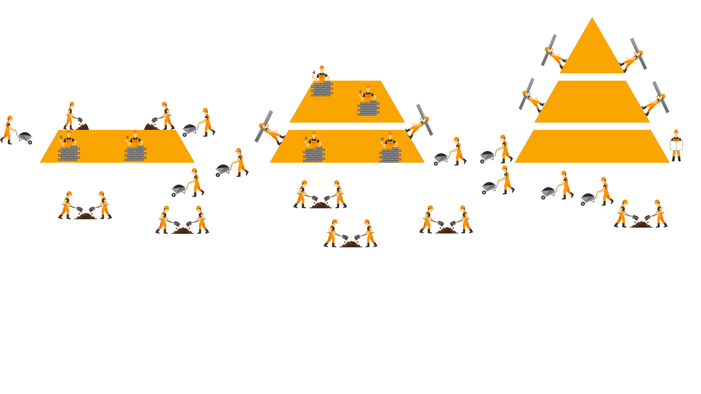
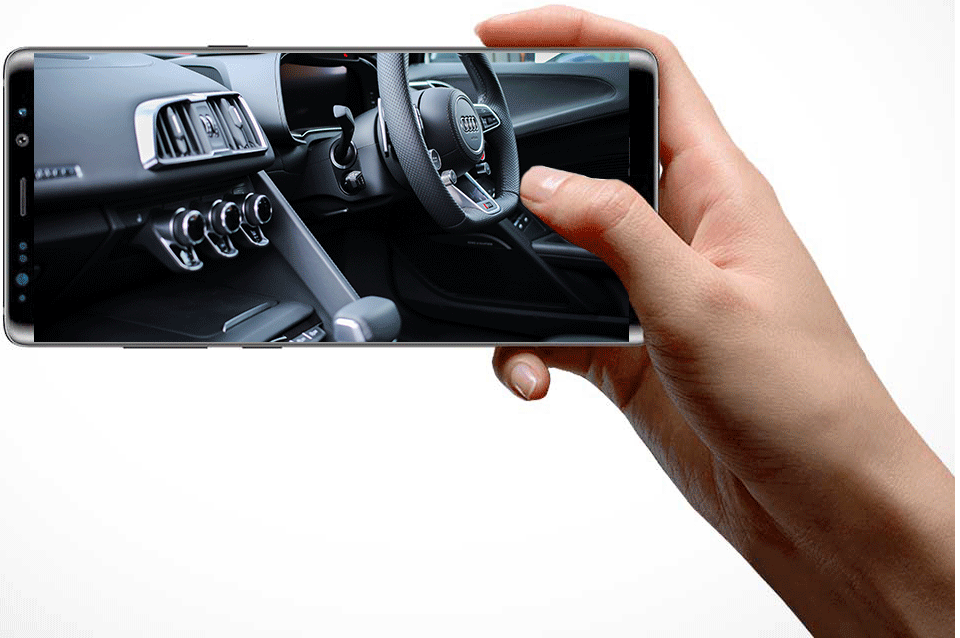

1. Art and or museums ( art show with normal images point your mobile phone and see a gif)
a. Voor veel mensen is het bezoek aan een kunstgalerij of het museum een leuke bezigheid. Alleen zijn we gelimiteerd tot een schilderij, video of lap tekst. Met ‘Augmented Reality’ kunnen we kunstgalerijen en museums omtoveren tot een nieuw digitaal avontuur. Met behulp van je mobiel bekijk je items in het gebouw en zie je in plaats van een standaard schilderij een kort verhaal, bijvoorbeeld een ‘gif’. Een voorbeeld is bijvoorbeeld een stap voor stap video hoe een schilderij is gemaakt of misschien laat je een volledige versie zien van een geschiedenis stuk, waarmee je ook nog eens de mogelijkheid heb om delen van het geprojecteerde stuk te inspecteren en meer te weten kan komen.

2. Education ( AR game through the safari, jungle) – with cards etc.
a. Leren is iets wat niet iedereen graag doet en daarom zijn wij mensen handig in het bedenken van andere manieren om het leren leuk te maken. Voor dit idee is een VR bril nodig. Deze bril zet de persoon op en zodoende wordt het type avontuur gekozen. Dit kan variëren tussen safari, jungle of binnen in een auto. Met een kijk op een bepaald gebied of voorwerp kan de persoon interacteren met hetgeen wat voor hem ligt. Met handbewegingen kan de persoon iets grijpen, uit elkaar trekken, inspecteren, etc. Daarnaast kan er gelopen worden zodat het lijkt alsof je jezelf bevindt in een andere omgeving.

3. Healthcare
a. Gezondheid is een belangrijk onderdeel voor ieder. Artsen en doctoren leren jaren lang en maken lange uren tijdens behandelingen. Daarom zou het ideaal zijn voor diegene als het werk makkelijker gemaakt kan worden. Door middel van augmented reality kunnen we het lichaam scannen en met dit soort scans onderzoeken of een patiënt een tumor, een knop of iets dergelijk heeft. Daarnaast kunnen de aders worden gescanned zodat er nooit meer een foute prik in de verkeerde ader zal zijn. Dit is pas het begin.
Het project is een digitale campagne van Pepsi Max ‘Live For Now’. Ze willen het onmogelijke naar boven halen aan de hand van innovatie en creativiteit. De reacties hierop waren geweldig. Er is een AR bushokkje gemaakt waarbij een zijkant van het bushoekje gebruikt werd als AR scherm. Dit scherm liet onmogelijke scenario’s zien. Met gebruik van 2D en 3D elementen werd het onmogelijke mogelijk en zagen de burgers ufo’s die lasers schoten, een komeet die vanuit de ruimte voor het bushokje neerstort, een tentakel die uit de grond een kijkje kwam nemen en een tijger die naar het bushokje toerende. Alles is op film vastgelegd door Pepsi zelf en is vervolgens online geplaatst op verschillende mediakanalen. De campagne was een succes, meer dan 10 miljoen kijkers! Pepsi verkocht 35% meer in de maand van de release. Zo is met gebruik van AR mogelijk om op andere manieren je doelgroep te bereiken dan een simpele advertentie in een bushokje.
Reflection
Het onderwerp augmented en virtual reality vind ik bijzonder, omdat je omgevingen kan creëren die je bijzonder, gek, apart of raar kan maken. Tijdens de workshop had ik wat moeite met Unity, omdat ik niet elke stap zonder problemen doorliep. MadMapper vind ik persoonlijk geen prettig programma en daar had ik vrij weinig energie in gestoken in vergelijking tot Unity. Je zal heel wat uren in elk programma moeten steken wil je er wat nuttigs uit halen.
De unity workshops kosten veel pogingen maar ik heb uiteindelijk mijn wereld kunnen maken en de opdrachten succesvol kunnen afronden. Hier en daar liep ik vast maar kwam gelukkig snel achter het probleem.
Ik heb geleerd dat je met een fantasierijke gedachte en veel tijd er ontzettend veel mogelijkheden hebt, wat betreft het maken van games/projecties. Ik kan de limieten op dit moment niet bedenken en ik denk dat die er ook niet zijn.
De toekomst van deze programma’s zien er zonnig uit. De standaard schermen zonder enige interactie zullen vervallen en AR en VR zal hier een grote rol spelen. Met behulp van deze technologieën kan je spelletjes maken en spelen, mensen helpen en simulaties maken en verbeteren. Ik denk zeker dat dit een toevoeging is van ons leven en dat het nog veel gebruikt zal worden.